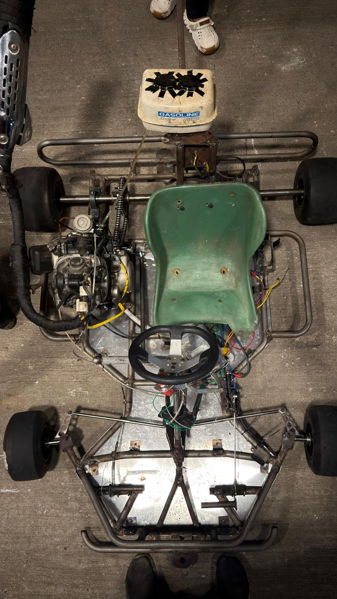
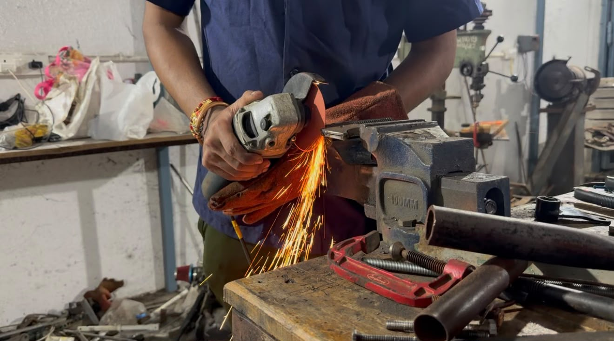

Low, rear-mounted fuel tank
Placed low and at the back to keep the centre of mass (CoM) down, so the kart stays stable through corners.
From a blank sheet to the starting grid.

Placed low and at the back to keep the centre of mass (CoM) down, so the kart stays stable through corners.
Burning fuel shifts the weight. Tank, seat and pedal positions are set to keep that shift under control.
Shifts through 1 - N - 2 - 3 - 4 - 5, so drivers get genuine gear-shifting practice.
Sprockets, steering shaft and wheel hubs are CNC-machined to make them lighter.
